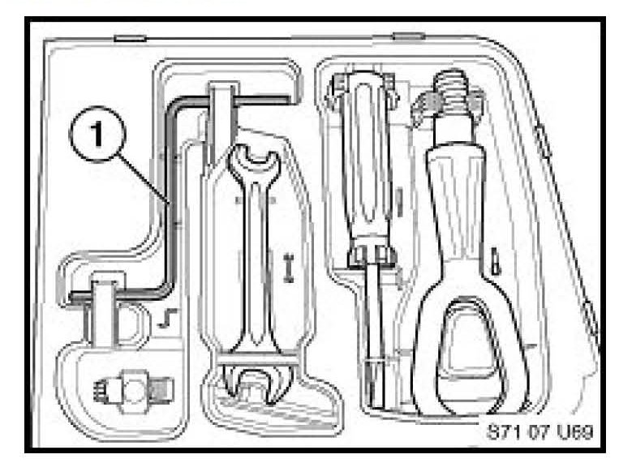

Sunroof - Emergency Operation Tool Eliminated
SI B71 01 07Vehicle Tools
September 2007
Technical Service
This Service Information bulletin supersedes S.I. B71 01 07 dated July 2007.
[NEW] designates changes to this revision
SUBJECT
Sunroof Emergency Operation Tool Eliminated
MODEL
[NEW] E90, E91, E92 (3 Series) produced from 6/2007
[NEW] E60, E61 (5 Series) produced from 9/2007
[NEW] E63 (6 Series) produced from 9/2007
[NEW] E65, E66 (7 Series) produced from 9/2007
[NEW] E70 (X5) produced from 10/2007
[NEW] E83 (X3) produced from 6/2007
INFORMATION

The sunroof emergency operation tool (1) has been eliminated from the factory supplied tool kit located in the luggage compartment.
However, the emergency operation feature of the sunroof motor which allows it to be operated manually with an Allen wrench is still present.
WARRANTY INFORMATION
Warranty claims to add the above-mentioned tool to the tool kit should not be made and will not be approved.